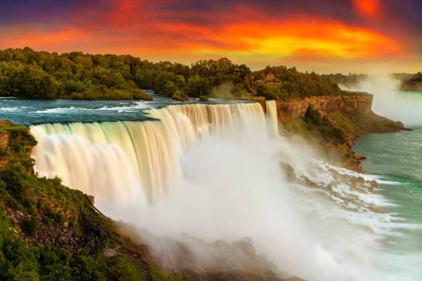
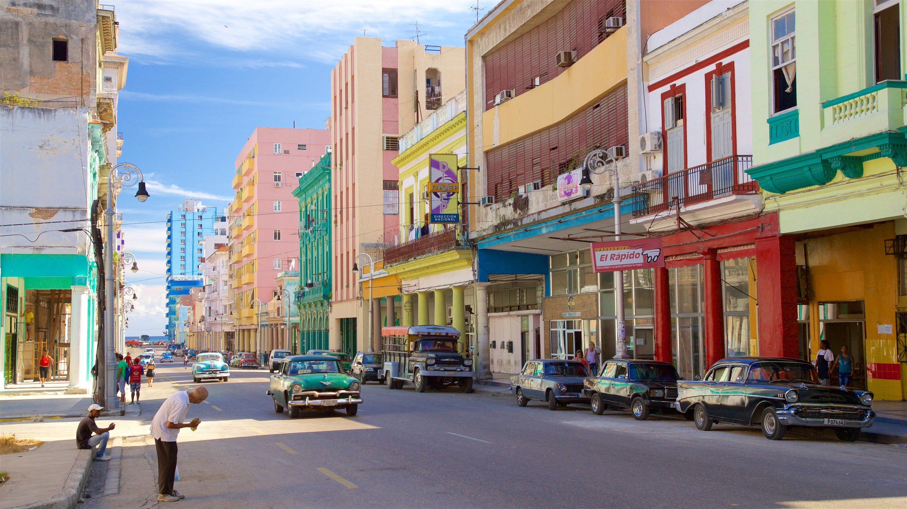

See the following Top Five best places across North America Continent

New York Time Square
Location:Middown,Mahattan
Info:Time square is major commercialintersection,tourist destination
,entertainment hub,and neighorhood in the Midtown manhattan section of the New York City

El-limon-waterfall
Location: Nestled in the Samaná Peninsula, near the town of El Limón.
Best Time to Visit: December to April, when trails are less muddy, making the hike to the waterfall more accessible.
ISLA GURU
Information: El Limón Waterfall is a spectacular 130-foot (40-meter) cascade surrounded by lush tropical forest. Visitors can reach the waterfall via guided hikes or horseback rides through scenic trails. The base of the waterfall features a natural pool, perfect for a refreshing swim. It's a must-visit for nature enthusiasts seeking adventure.

Niagara-Falls
Location: Ontario.
Best Time to Visit: June-August.
Info: A stunning set of waterfalls offering boat tours, scenic views, and vibrant nighttime illumination.

Havana
Location: Havana.
Best Time to Visit: December-May.
Info: A UNESCO site known for colorful colonial buildings, vintage cars, and lively culture.

Mexcio City Hestory Center
Location: Mexico City. Best Time to Visit: March-May. Info: A vibrant hub of Aztec ruins, colonial architecture, and cultural landmarks like Zócalo Square.